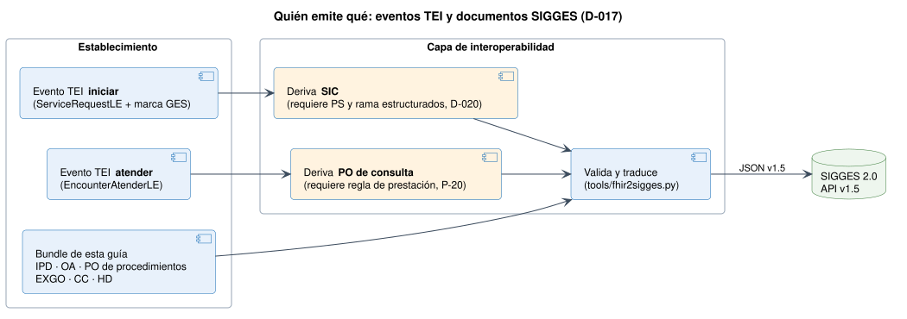

Notificación de Casos GES a SIGGES 2.0
0.4.0 - ci-build

Notificación de Casos GES a SIGGES 2.0
0.4.0 - ci-build

Notificación de Casos GES a SIGGES 2.0 - Local Development build (v0.4.0) built by the FHIR (HL7® FHIR® Standard) Build Tools. See the Directory of published versions
Esta página explica cómo se relaciona esta guía con la guía Tiempos de Espera Interoperable (TEI 0.2.3, hl7.fhir.cl.minsal.tei) y con el plan TEI-GES del equipo TEI. Las decisiones están en decisiones.md (D-017 a D-021) y los temas abiertos en pendientes-0.4.0.md (P-19 a P-23).
En resumen. TEI es la puerta de la interconsulta y esta guía es la notificación del caso GES a SIGGES. No compiten: SIGGES consume los eventos de TEI (D-017) y esta guía agrega lo que TEI no tiene. Para que eso funcione, TEI tiene que entregar el problema de salud y la rama estructurados (D-020).
| Aspecto | TEI 0.2.3 | Esta guía |
|---|---|---|
| Transporte | Bundle message + MessageHeader.eventCoding + $process-message |
Igual (D-001) |
| Respuesta | MessageHeader + OperationOutcome; HTTP 200 / 4xx / 5xx |
Igual, con response.code y número de caso |
| Establecimiento | DEIS de 6 dígitos | DEIS de 6 dígitos con DEIS2 derivado para SIGGES (D-004) |
| Problema de salud | Códigos 1–90 en cs-problema-ges-tei |
Mismos códigos 1–90 en CSProblemaSaludGES |
| Diagnóstico | ConditionDiagnosticoLE con verificationStatus |
DiagnosticoGES: verificationStatus = confirma / sospecha / descarta |
| Dato que exige SIGGES | En TEI 0.2.3 | Cómo lo resuelve esta guía |
|---|---|---|
| Problema de salud estructurado | Respuesta de un QuestionnaireResponse (motivo de derivación) |
CasoGES.type[problemaSalud] (FONASA, obligatorio) + type[programaGES] (SNOMED CT, opcional) |
| Rama (obligatoria en SIC, IPD y HD) | No existe: el subproblema es texto libre; los CodeSystems de rama están comentados | CasoGES.type[rama] 1..1 (D-020) |
| Número de caso | No existe | CasoGES.identifier SIGGES / local |
| Derivada para | Códigos 1–5 propios | ConceptMap: 2, 3 y 4 están cruzados |
| Especialidad | Códigos numéricos (18 = Gastroenterología adulto) | ConceptMap al formato 07-105-2 |
| Código de prestación de la PO | El Encounter de atención no lo trae |
Pendiente de regla (P-20) |
| IPD, OA, EXGO, CC | No existen | Perfiles propios |
| Cierre del caso | Motivo de cierre de la interconsulta | Cierre de caso con causal; ConceptMap sólo para los motivos que también cierran el caso |

iniciar cuando la interconsulta corresponde a GES. Las interconsultas que no pasan por TEI (secundaria a secundaria, prestadores privados) siguen usando SolicitudInterconsultaGES.atender.ServiceRequestLE fija status = #draft, amarra reasonCode a los códigos de «derivado para» de TEI y exige el estado de la interconsulta. Si la SIC de SIGGES derivara de ese perfil, quedaría en borrador para siempre y heredaría códigos que en SIGGES significan otra cosa. Por eso los perfiles son independientes y la correspondencia se declara con ConceptMaps.
Se generan con tools/tei2sigges.py desde la terminología del repositorio TEI. No se inventan equivalencias: se mapea por código idéntico, por nombre exacto o con una tabla revisada a mano.
Motivo de cierre: 18 motivos TEI, 2 equivalentes, 2 inexactos, el resto sin equivalente.
Los cuatro son experimental. Citan los CodeSystems de TEI por su URL canónica, sin declarar el paquete TEI como dependencia; el validador avisa que no los encuentra.
El plan TEI-GES propone dos EpisodeOfCare (global y del prestador) y una extensión gesProgramStatus. Esta guía mantiene un solo EpisodeOfCare por caso:
Condition.verificationStatus), el del episodio (EpisodeOfCare.status) y el de cada garantía (Task.businessStatus). Si se necesita, lo calcula SIGGES y lo publica en la consulta de casos; el prestador no lo envía (P-22).finished al descartar crea dos fuentes de verdad.QuestionnaireResponse a un elemento estructurado y agregar la rama codificada con el catálogo SIGGES.cs-problema-ges-tei (códigos 1–90) con vs-problema-ges-tei (conceptos SNOMED CT): el ejemplo de 0.2.3 envía un código SNOMED bajo el sistema 1–90.